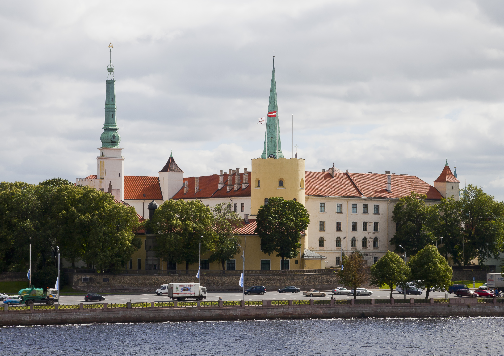

Jumti
Seguma izvēle, remonts, pārbūve un jumta konstrukciju jautājumi.
Konsultācijas
Praktisks tehniskais skatījums īpašniekiem, apsaimniekotājiem, projektētājiem un būvniekiem — pirms remonta, materiālu izvēles vai nākamā lēmuma.

Ko ietver
Konsultācija var notikt pa tālruni, video zvanā vai objektā.
Seguma izvēle, remonts, pārbūve un jumta konstrukciju jautājumi.
Ventilējamās, keramiskās, metāla un šķiedrcementa fasādes un to pieslēgumi.
Hidroizolācijas materiāli, slīpumi un pieslēgumi.
Dakstiņi, šīferis, metāls, membrānas, bitumens, zaļie un niedru jumti.
Apkopes plānošana un remontu prioritātes.
Kad vērsties
Neatkarīgs viedoklis pirms pirkuma vai līguma.
Sākotnējā sarunā noskaidrosim, vai pietiek ar konsultāciju vai vajag apsekošanu.
Tehniski argumenti sarunai par risinājumiem vai defektiem.
Rezultāts
Bez liekas sarežģītības un ar praktisku pamatojumu.
Vai vajadzīga apsekošana, projekts, remonts vai papildu pārbaude.
Zināšanas par materiāliem un risinājumiem, kas darbojas praksē.
Izvēlieties pakalpojumu, īsi aprakstiet situāciju un, ja iespējams, pievienojiet foto vai dokumentus. Sazināsimies par nākamo soli.